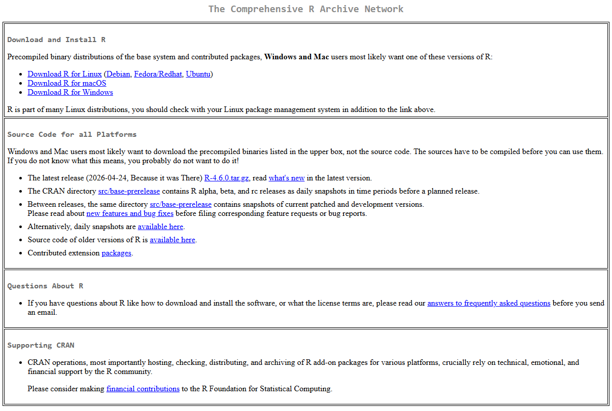

Coffee or tea?
Scan the QR code or click the button below to participate in our live interactive survey.
PeakMeister Data Pre-processing
A Step-by-Step Guide to Optimize Post-Analytical Workflow
PeakMeister
R-based Shiny App
Interactive user interface driven by powerful R analytical libraries.
Publicly Available on GitHub
Open-source, community-driven, and easy to clone or fork.
Download R Studio and R.app
2. RStudio Desktop
Premium IDE to edit, test, and run Shiny applications with ease.

PeakMeister Initial Considerations
An overview of data pre-processing steps and workflow optimization
Getting the Codebase
Sign up on GitHub
Create a free developer account on GitHub if you don't have one to access and clone modern repositories.
Create Github AccountLocalize PeakMeister2.0_UI on GitHub
Clone the UI code to your machine, or browse the active code directory online.
PeakMeister Interface
Overview of the Shiny App user interface and controls
Installing PeakMeister
Dependencies and package installation guide
Convert Data Files
ProteoWizard
Open-Source Proteomics Software Suite
Open-source software suite
Robust framework for analysis and processing of mass spectrometry data.
Purpose
Enable cross-platform use of mass spectrometry-based proteomics data.
Core Function
Convert proprietary vendor-specific file formats (which are otherwise locked and accessible only through vendor software) into standardized, open formats.
Impact
Make proteomics data more accessible, interoperable, and usable across diverse research tools and platforms.
MSConvert Installation / Setup Wizard
Guide to setting up ProteoWizard on Windows
Sample File and Parameter Configuration
Configuring filters and settings for raw file conversion
Running the App
Launching PeakMeister Shiny application locally
Interacting with PeakMeister Interface
Overview of R Shiny application tabs and basic controls
PeakMeister Outcomes and Analysis
Reviewing processing metrics, plots, and output options
Processing Real Datafile
Complete workflow execution with experimental mass spectrometry data
Editing and Correcting Peak Data
Manually reviewing, adjusting, and correcting peak picks
Exploring Advanced PeakMeister Features
Discovering additional analytical tools and visualization settings
Data Pre-processing Workflow
Hover over any step to view execution times and details
Details
Multisegment Injection (MSI) Capillary Electrophoresis
13-Injections-in-One-Capillary RunMigration Time Index
Relative correction of migration drift in injection 3:
Workflow Status
The Britz-McKibbin Laboratory
Innovative tools for capillary electrophoresis mass spectrometry